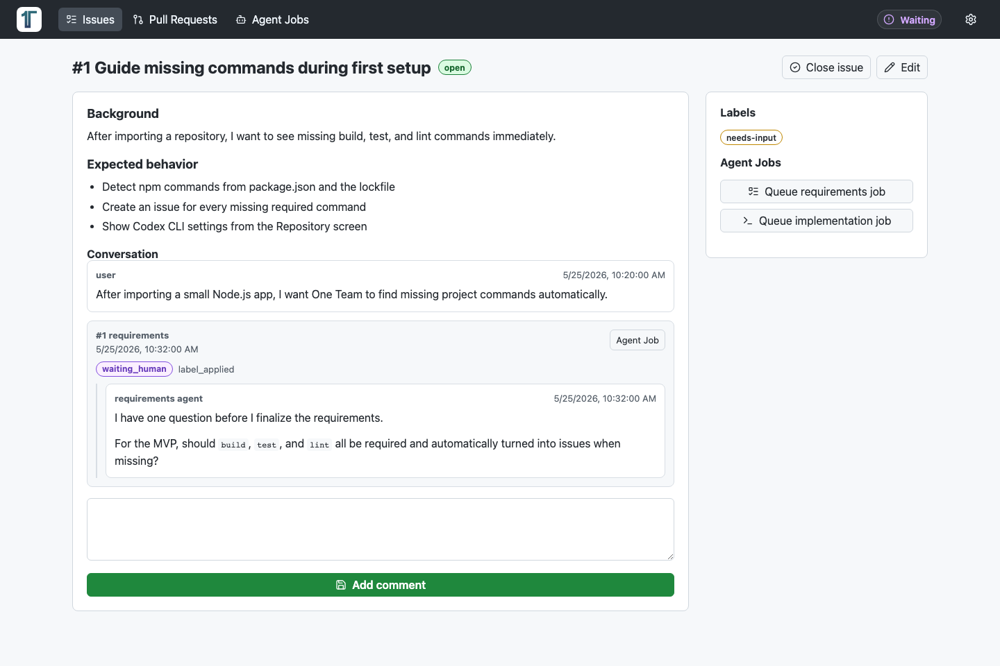
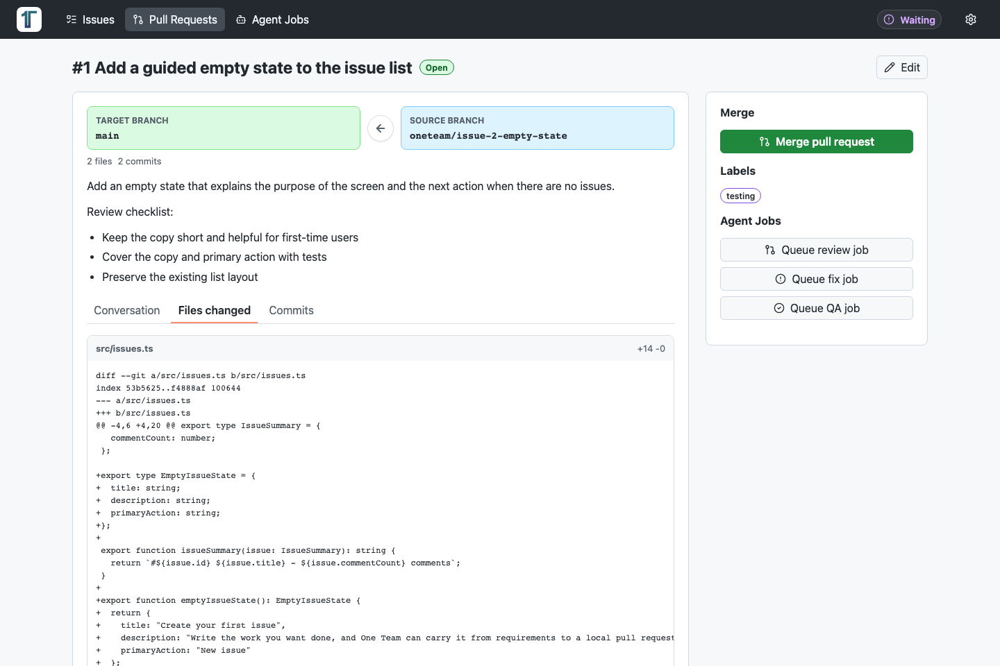
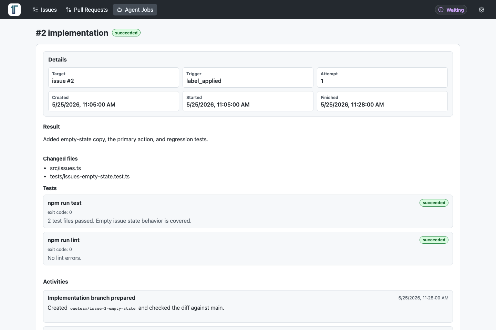
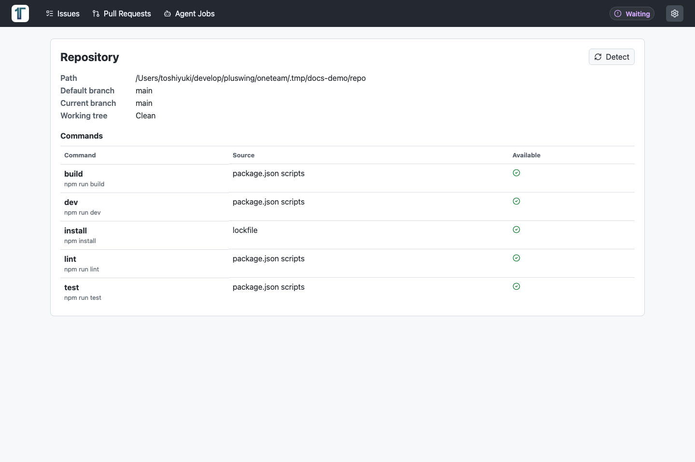

要望をIssueにまとめる
やりたいことや不具合をMarkdownで記録します。ラベルに応じて要件定義や実装のAgent Jobを開始できます。
One TeamはGitHub連携を前提にせず、手元のリポジトリを1つ登録して使います。Issue、Pull Request、 コメント、ラベル、Agent Job、Activity LogをローカルDBに保存し、AIの進行状況を追える形にします。
やりたいことや不具合をMarkdownで記録します。ラベルに応じて要件定義や実装のAgent Jobを開始できます。
実装ブランチとmainの差分、コミット、関連Issue、レビュー結果を同じ画面で確認できます。
Codex CLIの実行結果、変更ファイル、検証コマンド、エラー、Human Gateの質問を追跡できます。
One Teamの基本操作は、Issueを起点にしてAIへ次の作業を渡し、Pull Requestで確認する流れです。




Node.js、npm、git、Codex CLIの認証があれば起動できます。GitHub Pagesは紹介用の静的ページで、 実際のOne Team本体は手元で動かします。
npm installnpm run codex:loginnpm run devopen http://127.0.0.1:3579